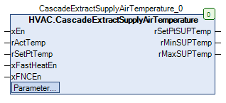

CascadeExtractSupplyAirTemperature (FB)¶
FUNCTION_BLOCK CascadeExtractSupplyAirTemperature
Kurzbeschreibung¶
Bildung einer Zuluftsolltemperatur mittels eines Kaskadenreglers ( PI-Regler )Zusatzfunktionen: Begrenzung der ZuluftsolltemperaturTypische Anwendung: Zulufttemperaturregelung in einer Lüftungsanlage
Darstellung¶

Funktionsbeschreibung¶
Allgemeines¶
Dieser Funktionsbaustein dient zur Bildung der Zuluftsolltemperatur einer Lüftungsanlage aus
1) Aktuelle Solltemperatur ( Abluft- oder Raumtemperatur ) in °C
2) Aktuelle Isttemperatur ( Abluft- oder Raumtemperatur ) in °C
unter Berücksichtigung der relativen ( rMinSUPTemp bzw. rMaxSUPTemp ) und absoluten ( rMinSUP bzw. rMaxSUP ) Grenzen.
Zusätzlich werden bei der Bildung der Zuluftsolltemperatur die Sonderbetriebsarten ‘Schnellaufheizung’ und ‘Freie Nachtkühlung’ berücksichtigt.
Die Bildung der Zuluftsolltemperatur erfolgt zeitverzögert ( tDelayControl ) nach der Freigabe / Sperrung des Reglers ( xEn = TRUE ).
Die Freigabe des Kaskadenreglers erfolgt, falls folgende nachfolgend beschriebenen Bedingungen gleichzeitig erfüllt sind:
1) Die Sonderbetriebsart Schnellaufheizung ist gesperrt ( xFastHeatEn = FALSE ).
2) Die Sonderbetriebsart Freie Nachtkühlung ist gesperrt ( xFNCEn = FALSE ).
3) Die aktuelle Isttemperatur rActTemp verletzt nicht ihre absoluten Grenzwerte ( +5.0 - +50.0 °C ).
4) Die Regelung ist freigegeben ( xEn = TRUE ) und die Einschaltverzögerung ( Zeitdauer = tDelayControl ) ist beendet.
In allen übrigen Situationen ist der Kaskadenregler gesperrt.
Regelung¶
Die aktuelle Isttemperatur rActTemp wird bei freigegebenem Kaskadenregler ( PI-Regler, xEn = TRUE, Ablauf der Zeitdauer tDelayControl, keine
Grenzwerteverletzung am Eingang rActTemp ) permanent mit der aktuellen Solltemperatur rSetPtTemp verglichen und je nach Betrag / Vorzeichen der Differenz
bzw. in Abhängigkeit von den Reglereinstellungen ( rPI_Kp bzw. rPI_Tn ) wird im Kaskadenregler eine Versatztemperatur erzeugt.
Im Heizfall ( rActTemp < rSetPtTemp ) ensteht somit eine positive Versatztemperatur im Bereich 0.0 - rMaxRelativeSUP K.
Im Kühlfall ( rActTemp > rSetPtTemp ) ensteht somit eine negative Versatztemperatur im Bereich 0.0 - rMinRelativeSUP K.
Im vollständig ausgeregelten Zustand ( rActTemp = rSetPtTemp ) ändert sich die Versatztemperatur nicht.
Diese Versatztemperatur wird anschliessend zur aktuellen Solltemperatur addiert und bei Bedarf auf die berechneten Grenzwerte
rMinSUPTemp bzw. rMaxSUPTemp begrenzt.
Am Ausgang rMinSUPTemp wird permanent die berechnete minimale Zuluftsolltemperatur ( rActTemp + rMinRelativeSUP,
absolut begrenzt auf rMinSUP bzw. rMaxSUP ) dargestellt.
Am Ausgang rMaxSUPTemp wird permanent die berechnete maximale Zuluftsolltemperatur ( rActTemp + rMaxRelativeSUP,
absolut begrenzt auf rMinSUP bzw. rMaxSUP ) dargestellt.
Die aktuelle Isttemperatur rActTemp wird auf die Einhaltung von Grenzwerten überwacht.
Bei jeder Grenzwertverletzung ( rActTemp < +5.0 °C bzw. rActTemp > +50.0 °C ) wird der Kaskadenregler deaktiviert.
Auswahl der Zuluftsolltemperatur¶
Die Auswahl der Zuluftsolltemperatur erfolgt gemäß der nachfolgenden Funktionstabelle.
xFastHeatEn xFNCEn rActTemp innerhalb Grenzwert xEn Zuluftsolltemperatur Hinweise TRUE X X X rMaxSUP Sonderbetriebsart ‘Schnellaufheizung’ FALSE TRUE X X rMinSUP Sonderbetriebsart ‘Freie Nachtkühlung’ FALSE FALSE FALSE X rSetPtTemp Grenzwertverletzung Isttemperatur FALSE FALSE X FALSE rSetPtTemp Sperrung der Regelung FALSE FALSE TRUE TRUE rSetPtTemp + Versatztemperatur Normalbetrieb
Legende: X = beliebig
Bildung der aktuellen Zuluftsolltemperatur rSetPtSUPTemp¶
Die aktuelle Zuluftsolltemperatur rSetPtSUPTemp wird aus der Zuluftsolltemperatur, erweitert um ein Handübersteuermodul, gebildet.
Zuluftsolltemperatur eManModeN rSetPtSUPTemp Hinweise X eMANNUM.Auto Zuluftsolltemperatur Handübersteuermodul in Automatik X eMANNUM.Man rManValue Handübersteuermodul in Handbetrieb
Legende: X = beliebig
Visualisierung¶
Codesys¶
- InOut:
Scope Name Type Initial Comment Input xEn BOOL Freigabe / Sperrung des Reglers ( FALSE = Sperrung, TRUE = Freigabe ) rActTemp REAL 0 Aktuelle Isttemperatur ( Abluft- oder Raumtemperatur ) in °C ( +5.0 - +50.0 ) rSetPtTemp REAL 21 Aktuelle Solltemperatur ( Abluft- oder Raumtemperatur ) in °C xFastHeatEn BOOL FALSE Freigabe / Sperrung der Schnellaufheizung ( FALSE = Sperrung, TRUE = Freigabe ) xFNCEn BOOL FALSE Freigabe / Sperrung der freien Nachtkühlung ( FALSE = Sperrung, TRUE = Freigabe ) Output rSetPtSUPTemp REAL Aktuelle Zuluftsolltemperatur in °C rMinSUPTemp REAL Berechnete minimale Zuluftsolltemperatur in °C rMaxSUPTemp REAL Berechnete maximale Zuluftsolltemperatur in °C Input rPI_Tn REAL 600 Nachstellzeit des Kaskadenreglers in s rPI_Kp REAL 1 Verstärkungsfaktor des Kaskadenreglers rMaxSUP REAL 26 Absolute maximale Zuluftsolltemperatur in °C rMaxRelativeSUP REAL 6 Maximale Differenz zwischen der Raum- / Ablufttemperatur und der Zuluftsolltemperatur - Heizfall in K rMinSUP REAL 16 Absolute minimale Zuluftsolltemperatur in °C rMinRelativeSUP REAL -8 Maximale Differenz zwischen der Raum- / Ablufttemperatur und der Zuluftsolltemperatur - Kühlfall in K tDelayControl TIME TIME#5m0s0ms Startverzögerung des Kaskadenreglers in min rManValue REAL Ausgangssignal des Kaskadenreglers im Handbetrieb in °C eManModeN eManNum eManNum.Auto Betriebsart der Handübersteuerung für das Ausgangssignal des Kaskadenreglers